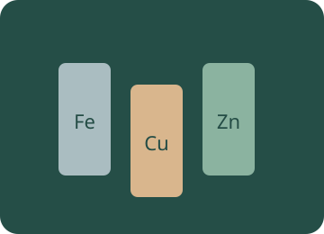

Metals
Investigate properties, compare reactivity and choose how to turn an ore into a useful material.

Choose an investigation
Make a prediction, choose the conditions and use the apparatus on the bench. Drag equipment into place, turn switches and watch the reaction. Need a hand? Use Help with this step. Record your evidence before answering the explanation question.
Preparing your experiment…
Choose conditions Sample, quantities and equipment
Use the equipment directly on the bench. Drag, click or tap the highlighted apparatus.
Record and compare your observations.
Your notebook stays while you explore this page. Reloading clears it. Practical notes and lesson checks are not sent to the teacher.
Use the evidence
Connect the practical to the chemistry
Atoms, elements, compounds and molecules
An element contains one type of atom; a compound contains chemically combined elements. A molecule is a discrete group of covalently bonded atoms. Metals and ionic solids are extended structures, not collections of individual metal or salt molecules.
Example. O₂ is a molecular element; H₂O is a molecular compound; Cu is a metallic element; NaCl is an ionic compound described by a formula unit.
Properties and metallic bonding
Positive metal ions attract delocalised electrons. Mobile electrons explain conduction; non-directional metallic bonding allows layers to deform without the structure immediately shattering. Graphite is a conducting non-metal, so conduction alone does not prove that a sample is a metal.
Example. Copper is useful in wiring because it conducts and can be drawn into wires. Graphite conducts because of delocalised electrons in its covalent layers.
Groups and trends
Group 1 metals react with water to form hydroxides and hydrogen; reactivity increases down the group. Halogen reactivity decreases down Group 17. Many transition elements show variable oxidation states, coloured compounds or catalytic activity. At room temperature, chlorine is a pale-green gas, bromine a red-brown liquid and iodine a grey-black solid; iodine vapour is purple.
Example. Chlorine displaces bromine from bromide: Cl₂ + 2Br⁻ → 2Cl⁻ + Br₂. Iodine cannot displace bromine from bromide.
Write a neutral ionic formula
Balance total positive and negative charge using the smallest whole-number ratio. Keep polyatomic ions together and use brackets when more than one is needed. Roman numerals specify the metal ion charge where required.
Example. Mg²⁺ + 2Cl⁻ gives MgCl₂; 2Al³⁺ + 3O²⁻ gives Al₂O₃; Ca²⁺ + 2NO₃⁻ gives Ca(NO₃)₂.
Reactivity and acids
The series ranks tendencies to form positive ions under defined comparisons. A useful school sequence is K, Na, Ca, Mg, Al, carbon, Zn, Fe, hydrogen, Cu, Ag, Au. Carbon and hydrogen are comparison markers, not metals. Surface films can alter observed rates.
Example. Fe + 2HCl → FeCl₂ + H₂. Iron forms iron(II) chloride in this dilute non-oxidising acid reaction. Compare equal moles, temperature and surface conditions when investigating rates.
Displacement as electron transfer
A more reactive metal can reduce ions of a less reactive metal. The reacting metal is oxidised; the dissolved metal ion is reduced. Spectator anions remain in solution.
Example. Zn + Cu²⁺ → Zn²⁺ + Cu. Zinc loses 2e⁻ and Cu²⁺ gains 2e⁻. Copper cannot reverse this reaction spontaneously under the same ordinary comparison.
Extraction and the blast furnace
Metals below carbon can often be extracted from oxides using carbon or CO. More reactive metals such as aluminium need electrolysis in the usual school-level routes. In a blast furnace, CO reduces iron oxide; limestone forms CaO that removes silica as slag.
Example. Fe₂O₃ + 3CO → 2Fe + 3CO₂. CaCO₃ → CaO + CO₂; CaO + SiO₂ → CaSiO₃. Copper oxide can be reduced by carbon under suitable conditions.
Alloys and uses
An alloy is a mixture containing a metal. Different-sized atoms can hinder dislocation/layer motion, often increasing hardness. Composition and treatment affect properties. Stainless steel resists corrosion because of a chromium-rich protective film.
Example. Brass contains Cu and Zn; bronze Cu and Sn; carbon steel mainly Fe with a small amount of C. Choose a property for the intended use rather than assuming every alloy is better in every way.
Class practicals and further exploration
These activities follow the topics in your syllabus. Use the linked class sheets for your teacher’s practical instructions and reporting requirements. Virtual models complement teacher-supervised practical work.
Ready to test your understanding?
Choose from 80 questions on metals. Tick your areas and levels, practise with explanations or take a Test yourself quiz, then retry the questions you missed.